Практичні курси · журнал «ДентАрт» 2015 №2
Реставрація контактних поверхонь у бокових зубах
RESTORATION OF THE CONTACT SURFACES IN POSTERIOR TEETH

Контакти між зубами необхідні для функціонування зубів у вигляді єдиного зубного ряду і єдиної зубощелепної системи. Відомо, що при змиканні щелеп і зростанні оклюзійного навантаження коронки зубів скорочуються за висотою і розширюються в боки, а це означає, що й контакти між зубами ущільнюються. Саме через такі деформації коронок зубів жувальне навантаження не лише поглинається, а й передається на сусідні зуби.
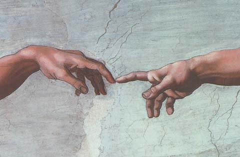
Фрагмент фрески «Створення людини» Мікеланджело Буонарроті з розпису Сікстинської капели (1508-1512) у Ватикані, інтерпретований Олегом Перепелицею (2008).
Алгоритм відновлення бокових зубів
Доступ до центру коронки бокового зуба через жувальну поверхню радикально змінює послідовність його відновлення порівняно з алгоритмом відновлення коронок передніх зубів.
Відновлення бокових зубів від довільного дефекту (навіть якщо від зуба залишився лише корінь) ми проводимо в послідовності «ПС-МОД-МО-О». Згідно з цією концепцією, спочатку необхідно усунути всі дефекти оральної стінки, потім усі дефекти вестибулярної стінки і таким чином перевести довільний дефект у мезіально-оклюзійно-дистальний дефект (МОД). При відновленні стінок коронки бокового зуба важливо відновити кути переходу оральної і вестибулярної поверхонь у контактні. Далі слід відновити дистальну контактну поверхню з опорою на відтворені кути зовнішніх стінок і перевести дефект МОД у дефект мезіально-оклюзійний (МО). Відновленням мезіальної контактної поверхні завершується процес переведення довільного дефекту в дефект класу I, який усувається пошарово імітацією зубних тканин відповідними відтінками композиту — навколопульпарного дентину, основного дентину, основної емалі і поверхневої емалі.
Системи секційних матриць для відновлення контактних поверхонь
Для відновлення контактних поверхонь бокових зубів застосовуються системи з круговими матрицями і секційними матрицями. Усі системи передбачають блокування міжзубним клинцем потрапляння реставраційного матеріалу в піддесенну ділянку в міжзубному проміжку.
До кругових матричних систем належать, наприклад, система Автоматрикс (Дентсплай/Аш) і система Супермат (Керр/Хев Неос), вони складаються з кругових матриць універсальної опуклості, фіксувального замка та інструмента для затягування матриці навколо коронки. Системи кругових матриць потребують обов'язкового встановлення на обидві контактні поверхні одночасно (таке встановлення потребує більшого розведення зубів для отримання щільних контактних пунктів), але вони незамінні при відновленні дистальних контактних поверхонь на третіх молярах, де неможливо встановити міжзубний клинець.
До секційних матричних систем належать Компози-Тайт (3М) і Палодент (Дентсплай), які були розроблені і належали раніше іншим компаніям. Системи секційних матриць, крім самих матриць різних видів, включають зажимні кільця, для встановлення яких між зубами зазвичай застосовують щипці для накладання зажимів раббердама. Ці системи можна одночасно встановлювати як на одну контактну поверхню, так і на дві.
Система секційних матриць Компози-Тайт
(3М, в оригіналі — Гаррісон Дентал Солюшнс)
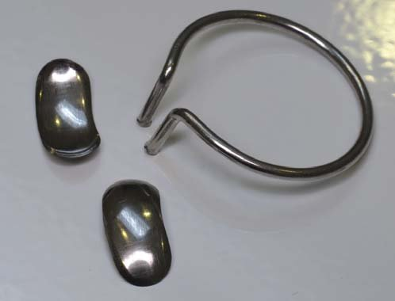
У системі Компози-Тайт секційні матриці стальні, тому є пружними і дуже тонкими. Розведення зубів виконується міжзубним клинцем, а притискання матриці до оральної і вестибулярної стінок коронки — зажимним кільцем. Зажимне кільце має кругле перетин і круговий виступ на торці для фіксації, легко розтягується і легко встановлюється між реставрованими зубами.
Система секційних матриць Палодент
(Дентсплай, в оригіналі — Дарвеу)
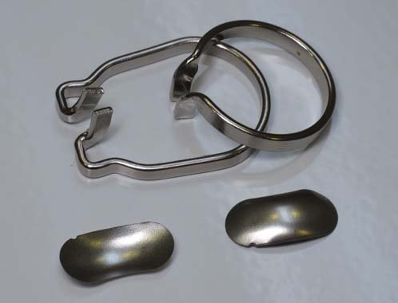
У системі Палодент матриці алюмінієві, тому піддаються контуруванню, локалізації контактного пункту і легко адаптуються до поверхні. І розведення зубів, і притискання матриці до країв дефекту виконується зажимним кільцем прямокутного перетину, тому воно розтягується зі значним зусиллям і важко встановлюється між реставрованими зубами (потрібні потужні щипці для накладання зажимів раббердама).
Наші вдосконалення системи Палодент
Будь-яка, навіть найкраща система, може і повинна бути вдосконалена, якщо цим досягається краща якість того, що цією системою виконується, або скорочується час виконання роботи. У системі Палодент нами використовуються секційні матриці різної опуклості, зажимні кільця різної активації і утворення складок по кутах зафіксованої матриці.
Матриці для медіальної і дистальної поверхонь
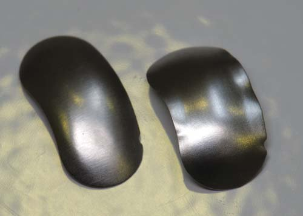
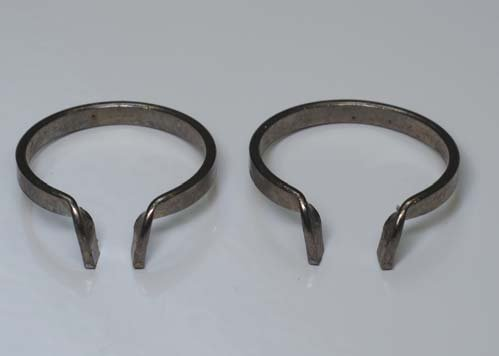
Усім відомо, що мезіальні і дистальні поверхні бокових зубів мають різну форму: усі мезіальні поверхні є більш прямими, а всі дистальні поверхні — більш опуклими. Однак немає жодної системи контурування контактних поверхонь, у якій би ця анатомічна аксіома враховувалася.
Форма секційних матриць системи Палодент чудово підходить для відновлення тільки дистальних поверхонь бокових зубів. Якщо ж таку секційну матрицю встановити на мезіальну контактну поверхню і зафіксувати міжзубним клинцем, то надмірна опуклість призведе до прогинання матриці всередину порожнини, і спроби усунути цей прогин завершаться, в кращому разі, формуванням вертикальної складки.
Але якщо зменшити опуклість секційної матриці Палодент шляхом протягування через вузький рівний край чогось (наприклад, нашого пристосування для контурування лавсанових матриць), то така матриця буде відповідати формі мезіальної контактної поверхні. Таке контурування секційних матриць Палодент є актуальним і у випадку зменшення відстані між шийками внаслідок тривалої відсутності контакту між зубами.
Кільця для премолярів і молярів
Функція фіксувального кільця системи Палодент полягає в розведенні зубів для отримання щільного контакту між боковими зубами. Але добре відомо, що премоляри і моляри відрізняються величиною, і вестибуло-орально моляри більші за премоляри аж на 2 мм. Як наслідок, якщо застосовувати для відновлення контактних поверхонь усіх бокових зубів одне й те саме фіксувальне кільце, то моляри будуть розведені надмірно, а премоляри — недостатньо.
Фіксувальне кільце системи Палодент піддається активації, його можна стиснути або розтягнути, достатньо знайти для активації звичайні крампонні щипці. Тому на кожному робочому місці у нас є два круглих кільця Бай-Тайн: стягнуте — для премолярів і розтягнуте — для молярів.
Отримання плавного переходу на крайовий валик
Коли секційна матриця встановлена в міжзубному проміжку, притиснута в пришийковій ділянці дерев'яним клинцем, а зажимне кільце встановлене на зовнішніх поверхнях зубів, між якими відновлюється контакт, тоді край матриці, звернений до жувальної поверхні, залишається практично у вертикальній позиції. У цьому разі після відновлення контактної поверхні композитом необхідно спочатку тонким фінішним бором, потім металевою абразивною смужкою сформувати плавний перехід контактної поверхні в крайовий валик. Але якщо невеликими щипцями утворити по кутах зафіксованої секційної матриці дві складки, то край матриці нахилиться до жувальної поверхні, утворивши тим самим необхідний плавний перехід, який у процесі фінішної обробки потрібно буде уточнити.
Зазвичай ми встановлюємо вертикально клинець великого розміру між тиском зажимного кільця з оральної сторони і секційною матрицею. Це необхідно для притискання секційної матриці до оральної стінки реставрованого зуба і резервування таким чином більшого простору міжзубного проміжку з оральної сторони відповідно до анатомічної форми контактних поверхонь.
Контактна поверхня з трьох композитів
Ми рекомендуємо відновлювати контактну поверхню трьома різними композитами з одномоментною світловою полімеризацією всієї поверхні. Як правило, різні композити однієї реставраційної системи є хімічно сумісними між собою і тому можуть застосовуватися разом в одній реставрації.
Першим під секційну матрицю вносимо в невеликій кількості текучий композит і розподіляємо його вздовж прилягання секційної матриці до стінок зуба. Завдання цієї порції текучого композиту полягає в компенсації неплотного прилягання матриці і заповненні тих щілиноподібних просторів, які не можуть бути заповнені щільним композитом.
Наступним у пришийкову частину контактної поверхні вносимо прямо з капсули, якщо це можливо, мікрогібридний композит, який має відмінну вклеюваність. Завдання мікрогібридного композиту полягає в забезпеченні цілісності контактної поверхні в пришийковій ділянці на час внесення і пластичної обробки наногібридного композиту. Крім того, мікрогібридний композит порівняно з нанокомпозитом має більшу еластичність, і ця властивість буде дуже важливою в пришийковій ділянці для забезпечення довговічності і герметичності крайового прилягання реставрації. Внесену порцію композиту потрібно ретельно притерти до поверхні секційної матриці, витісняючи тим самим текучий композит. Усі надлишки текучого композиту повинні бути видалені з простору контактної поверхні.
Наостанок в ділянку контактного пункту і крайового валика вносимо необхідну кількість наногібридного композиту, який необхідно адаптувати до поверхні мікрогібридного композиту і країв порожнини.
Завдання наногібридного композиту — забезпечити міцність і стійкість до стирання реставрованої контактної поверхні в ділянці контактного пункту і крайового валика.
Клінічний приклад
Цей клінічний приклад реставрації верхніх правих молярів є постановочним. Це означає, що пацієнт був запрошений спеціально з метою створення ілюстрацій для статті, більшість знімків з наконечниками, інструментами і пристосуваннями виконані, коли вони утримувались у робочій позиції асистентом, а кількість знімків у багато разів перевищувала необхідну для поточної клінічної реєстрації стоматологічного втручання.
Вихідна клінічна ситуація
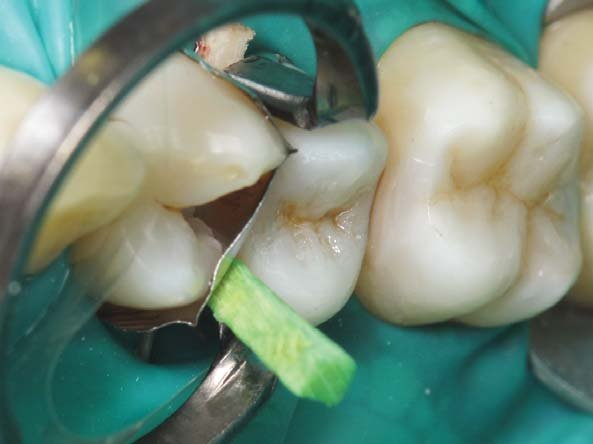
Вигляд по жувальній поверхні. Зуб 16 протягом 15 років після прорізування неодноразово піддавався стоматологічному втручанню з приводу каріозного ураження на контактних поверхнях. Але найстаршому молярові ще пощастило, оскільки втручання в зуб 17, який прорізався лише 6 років тому, вже призвело до його девіталізації. Архітектура жувальної поверхні порушена (валики між площинами на горбках згладжені, крайові валики і триангулярні ямки відсутні, з'єднання пломб і емалі пігментоване).
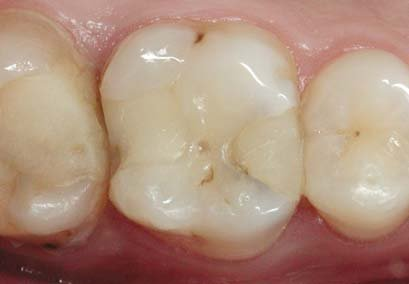
Вигляд по вестибулярній поверхні. Анатомічна форма вестибулярної поверхні збережена, і мезіальні та дистальні скати вестибулярних горбків утворюють по вершинах кути, трохи менші за прямий. У ділянці сліпої ямки і біля основи дистального горбка є вогнищева пігментована демінералізація. Крайове прилягання пломби на мезіальній контактній поверхні зуба явно порушене і пігментоване. Ясенний край уздовж вестибулярної поверхні без змін, але міжзубні сосочки запалені, особливо між молярами.
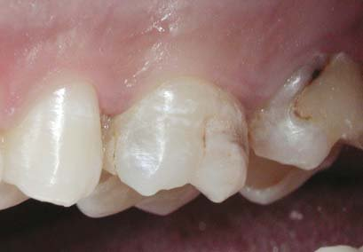
Вигляд по оральній поверхні. Піднебінна фісура розташована практично по центру коронки, хоча зазвичай вона зміщена дистально через потужний медіальний піднебінний горбок. Фісура пігментована, однак краї емалі збережені, і немає прямого доступу для визначення наявності каріозної порожнини. На противагу вестибулярним горбкам, вершини оральних горбків стерті, і це видається цілком природним, оскільки оральні горбки верхніх бокових зубів є опорними і зазнають основного жувального навантаження.
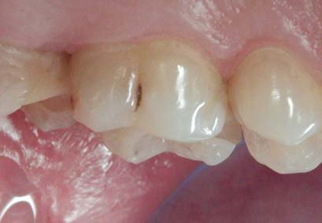
Вигляд з вестибулярного боку в оклюзії. Ключ оклюзії — нейтральний: нижній перший моляр перебуває на півкорпуса попереду верхнього першого моляра, верхні вестибулярні горби перекривають нижні, і змикання молярів є фісурно-горбковим. Ясенний край уздовж коронки зуба 16 у спокійному стані, однак обидва міжзубні сосочки запалені, вершини сосочків згладжені. При препаруванні слід шукати причини неспокійного стану міжзубних сосочків, місця ретенції зубного нальоту.
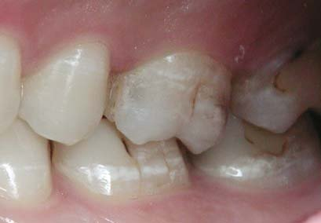
Оклюзійні контакти. Для коректного визначення контактних точок по жувальній поверхні реставрованих зубів пацієнт повинен короткочасно і часто змикати зуби. Тоді за допомогою артикуляційної фольги товщиною 20 мкм можна зафіксувати реальні контактні точки при початковому змиканні зубів. Тривале змикання зубів призводить до деформації коронок і переміщення зубів за рахунок тканин періодонта, і тоді артикуляційна фольга зафіксує і такі контактні точки, яких насправді немає.
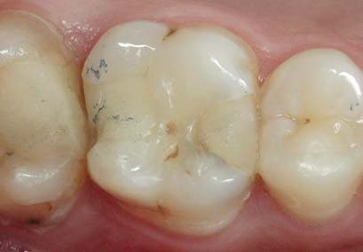
Визначення кольору бокових зубів
Ідентифікація за кольоровим еталоном. Усі зуби в межах одного зубного ряду складаються з оптично однакових зубних тканин, але мають різний колір, і це пов'язано з різною топографією зубних тканин анатомічно різних зубів. Тому ідентифікацію кольору будь-яких зубів ми починаємо з ідентифікації кольору зуба 11, з якого зазвичай складається будь-яка шкала еталонів для визначення кольору зубів. Верхні передні зуби були очищені від пелікули і зволожені. Зволожений еталон В2 за шкалою ВІТА визначений найближчим за кольором до зуба 11.
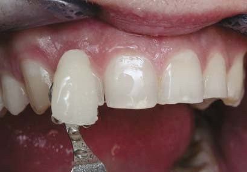
Ідентифікація за спектрофотометром. Додатковим методом ідентифікації кольору зубів є спектрофотометрія. Цей метод дуже надійний і дозволяє мінімізувати вплив людського фактора. У прямій реставрації достатньо провести визначення кольору зуба по центру коронки, оскільки колір пришийкової частини і колір по ріжучому краю коронки є похідними і досягаються автоматично через відновлення коронки зуба реставраційними матеріалами «зсередини назовні» в топографії природних зубних тканин.
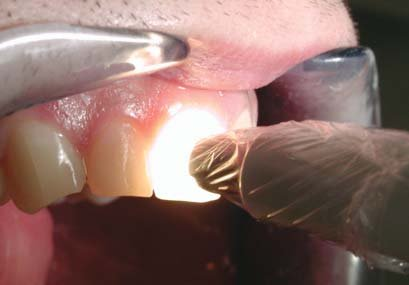
Ідентифікація за спектрофотометром. Спектрофотометр ВІТА Ізішейд показує колір зуба за класичною шкалою і за шкалою 3D-Мастер. Остання шкала досконаліша і коректніша, складена на основі дослідження природних зубів, однак класична шкала є традиційною і, попри свої недоліки, оголошені розробниками 3D-Мастер, продовжує залишатися найпопулярнішою. Спектрофотометр показує також світлоту (L), насиченість (C) і кольоровий тон (H) як складові кольору зубів.
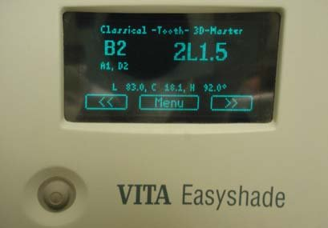
Кольорова конструкція реставрованих зубів. Далі слід вибрати відтінки композиту, що імітують окремі зубні тканини для зуба 11 (предентин — білий опак, основний дентин — А3,5-опаковий мікрогібридного композиту, основна емаль — відтінок тіла В2 і поверхнева емаль — відтінок жовтої емалі). Тепер усі зуби пацієнта будуть відновлюватися лише цими чотирма відтінками! Складаючи вибрані відтінки в топографії зубних тканин реставрованого зуба, можна буде автоматично отримувати колір реставрації, ідентичний кольору основи.
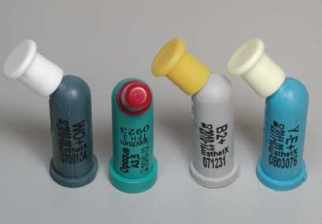
Додаткові реставраційні матеріали. Для вирішення технічних проблем у процесі реставрації знадобиться також текучий композит двох опаковостей (опаковий або емалевий і прозорий). Відтінок значення не має, оскільки ці матеріали застосовуються в такій кількості, що не впливають на колір реставрації. Опаковий відтінок текучого композиту потрібен для усунення гідрофільності адгезивного шару, а прозорий потрібен при побудові контактної поверхні для компенсації неточності прилягання секційної матриці.
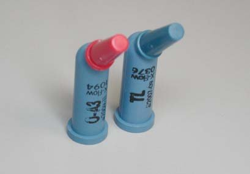
Препарування зубів
Планування за рентгенівським знімком. На рентгенівському знімку можна побачити «невидиме клінічно»: у зубі 16 на дистальній і мезіальній поверхнях визначаються вогнища демінералізації дентину під пломбами, на дистальній поверхні зуба 15 — первинне вогнище каріозного ураження (наразі це велика рідкість), у зубі 17 відсутня монолітність мезіальної частини реставрації, і немає ясності в крайовому приляганні реставрацій на контактних поверхнях зубів 16 і 17 (це також може бути наслідком некоректного напрямку променя).
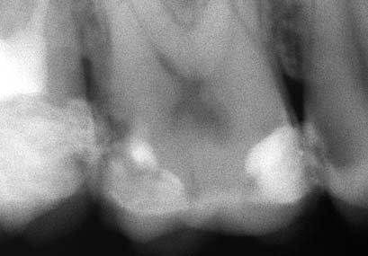
Очищення професійною пастою. Обов'язкове правило кожної реставрації — поверхню реставрованих зубів перед відновленням будь-якої складності й обсягу необхідно ретельно очистити професійною зубною пастою за допомогою нейлонової щітки або гумової чашки на обертах мікромотора близько 3000 за хвилину (професійна паста не містить фтору і олій). Професійна зубна паста має високу абразивність і тому легко видаляє зубний наліт та інші забруднення поверхні, а також пелікулу.
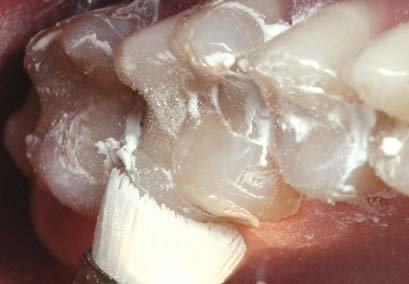
Видалення реставрацій. Кулястим алмазним бором зернистістю 100-120 мкм (зазвичай такі бори не маркуються) слід видалити реставраційний матеріал, не змінюючи раніше створеної форми порожнини. Цим бором можна легко розрізнити твердість композиту і емалі, і це дозволить звести до мінімуму пошкодження емалі. Твердість дентину близька до твердості композиту, однак у реставраціях, що відслужили свій термін, композит зазвичай втрачає зв'язок із дентином і, будучи позбавленим макроретенції, сам «злітає» з поверхні.
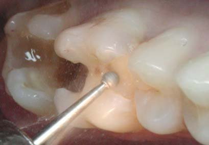
Видалення надлишків. Після видалення основного обсягу реставрацій було виявлено винуватця запаленого стану дистального міжзубного сосочка зуба 16 — навислий край реставрації в міжзубному проміжку. Якщо є навислий край, місце для ретенції зубного нальоту, то неважливо, яким матеріалом цей навислий край був утворений: склоіономером, композитом, керамікою чи цементом для фіксації… Ясенний край, міжзубний сосочок завжди захищатимуться від бактерій запаленням.
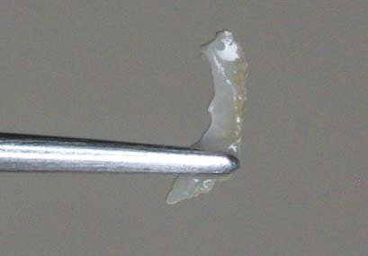
Препарування дентину. Після видалення реставраційного матеріалу необхідно перевірити стан поверхні дентину. Уздовж емалево-дентинного з'єднання можна залишати лише щільний дентин, який може утворити міцне з'єднання з адгезивною системою вже зараз. В адгезивній реставрації можна по дну порожнини, особливо в проекції рогів пульпи, залишати розм'якшений демінералізований дентин, який в умовах відновлення герметичності реставрованого зуба може бути ремінералізований.
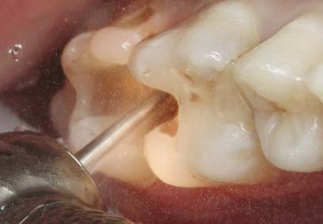
Препарування зубів (продовження)
Препарування емалі. Усі природні заглиблення на поверхні емалі (сліпа ямка на вестибулярній поверхні, утворена екватором коронки і двома вестибулярними горбками, і піднебінна фісура, утворена оральними горбками) мають бути перевірені ультразвуковим скейлером. Дія ультразвукового скейлера на поверхню емалі спроєктована так, щоб наконечник ефективно видаляв зубні відкладення, не пошкоджуючи емаль, що можна використовувати для виявлення порожнини під емаллю.
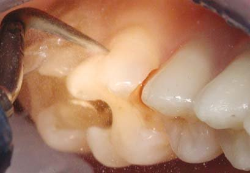
Препарування піднебінної фісури. Якщо наконечник ультразвукового скейлера, встановлений у ділянці анатомічного заглиблення, руйнує емаль і просувається вглиб, значить, емаль позбавлена в'язко-еластичної підтримки дентину через наявність порожнини під фісурою. Тоді потрібно формувати доступ до порожнини через емалевий шар і видаляти в ній некротичний дентин. Для глибокого очищення фісури ми використовуємо «препарувальний» файл К-рімер .20 на додаток до порівняно великого кінчика наконечника ультразвукового скейлера.
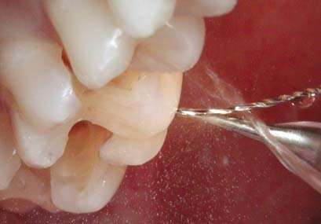
Препарування жувальної фісури. Вигнутий препарувальний К-рімер .20 потрібно встановити в найглибшу частину фісури і переміщати вздовж фісури з прикладеним до нього працюючим наконечником ультразвукового скейлера. Якщо наконечник скейлера і препарувальний файл не руйнують емаль, значить, емаль забезпечена в'язко-еластичною підтримкою дентину і, отже, порожнини під емаллю немає. Тоді анатомічне заглиблення в емалі підлягає інфільтрації дентинним адгезивом з подальшим запечатуванням герметиком.
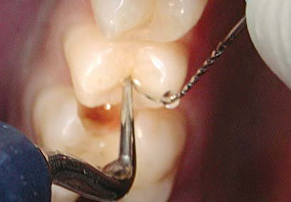
Препарування жувальної фісури. У центральній частині жувальної фісури чи то її профіль, чи то демінералізація поверхневої емалі дозволили кінчику препарувального К-файла опуститися у фісуру на всю глибину (кінчик К-рімера самостійно утримується у фісурі). Навіть при такому зануренні файла у фісуру і наявності пігментації в її глибині слід також застосувати лише інфільтрацію глибокої частини фісури і запечатування входу в неї (превентивна «розшивка» фісур залишилася в минулій, доадгезивній стоматології).
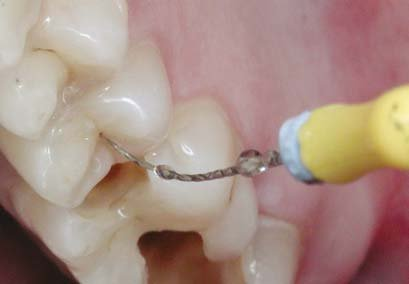
Видалення демінералізованої емалі. Препарування емалі (видалення поверхневої демінералізованої емалі, формування скошених країв) потрібно проводити лише алмазними фінішними борами зернистістю 30 мкм (такі бори маркуються жовтою смужкою) кулястої і циліндричної форми для того, щоб не провокувати утворення нових мікротріщин в емалі. Дизайн препарування емалі є повністю довільним і орієнтованим виключно на дефекти (є дефект — препаруємо, немає дефекту — інфільтруємо).
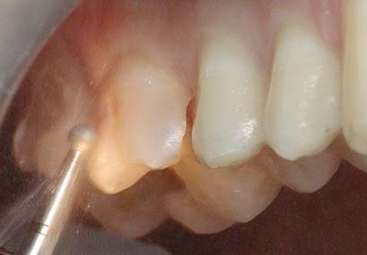
Вигляд препарованих зубів
Вигляд по жувальній поверхні. По жувальній поверхні можна бачити всі ознаки вільного дизайну препарування, або препарування, орієнтованого на дефект: порожнини округлої форми, у проекції пульпи залишений пігментований, але достатньо щільний дентин, збережені тонкі стінки емалі, позбавлені підтримки дентину, відсутні будь-які макроретенційні елементи (наприклад, з'єднання порожнин між собою). Такий дизайн став можливим завдяки адгезивній техніці із застосуванням дентинних адгезивів.
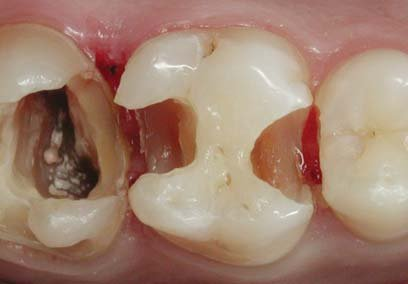
Вигляд по вестибулярній поверхні. Позбавлена підтримки дентину вестибулярна емаль у зубі 17 потребує адекватної заміни дентину композитом, який замінив би опорні структури коронки, видалені при створенні доступу в систему кореневих каналів. Вільна емаль виглядає також темнішою і сірішою через відсутність дентину. Білі горизонтальні смуги на вестибулярній поверхні емалі — це прояв ендемічного флюорозу зубів, і для реставрації в адгезивній техніці вони не становлять жодних проблем.
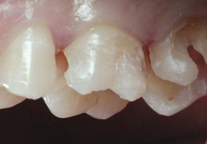
Вигляд по оральній поверхні. У зубі 17 оральна емаль збережена практично повністю. Відсутній кут коронки між оральною і контактною поверхнями, тому перш ніж відновлювати мезіальну контактну поверхню, слід відновити цей кут коронки для створення вертикальної опори під секційну матрицю і фіксувальне кільце. Піднебінна фісура зуба 16 очищена на оперативно доступну глибину, незначна пігментація буде інфільтрована дентинним адгезивом і запечатана текучим композитом.
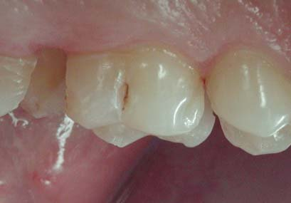
Контроль за рентгенівським знімком. Лише на рентгенівському знімку видно розміри ураження дентину на дистальній поверхні зуба 15. Препарування проведено з доступом через мезіальну порожнину в зубі 16, завдяки чому вдалося зберегти емаль по жувальній поверхні, включно з дистальним крайовим валиком. На знімку добре видно залишені виступними пришийкові краї апроксимальних порожнин зубів 15 і 16. Збереження вільної емалі, позбавленої підтримки дентину, можливе лише в адгезивній реставрації.
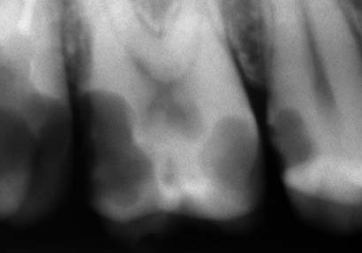
Ізоляція реставрованих зубів. При реставрації молярів раббердам для стабілізації в порожнині рота накладається на всі зуби робочої сторони, включно з центральними різцями. Дизайн кінцевого зажиму, встановленого на зубі 17, спеціально розроблений для других/третіх молярів (вестибулярна частина розширена для створення робочого простору при реставрації пришийкових порожнин, дуга плоскіша і розташована ближче до тисків зажима через розміщення в ретромолярній ділянці). Завіса між молярами зафіксована клинцем.
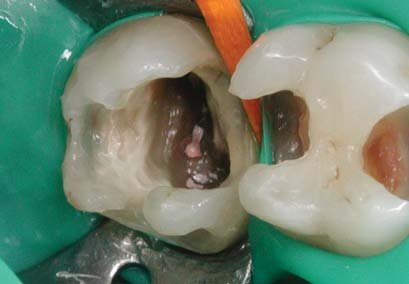
Реставраційна підготовка
Реставрація контактної поверхні зуба 17. Спочатку проведено герметизацію устя кореневих каналів і заповнення простору порожнини зуба. Потім були відновлені оральна і вестибулярна стінки коронки з моделюванням вертикальних кутів переходу на контактну поверхню. З опорою на створені кути відновлена контактна поверхня (переведення дефекту класу II в дефект класу I) і відновлені шари дентину і основної емалі. Наостанок прозорим відтінком на жувальній поверхні змодельовані горбки і фісури.
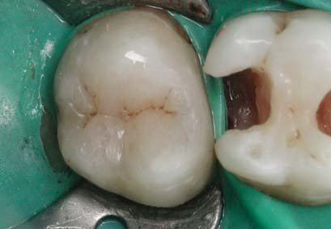
Реставрація контактної поверхні зуба 15. Навіть якщо ми маємо доступ у порожнину на дистальній поверхні зуба 15 через порожнину в зубі 16, реставрація другого премоляра з повністю збереженою жувальною поверхнею становить значні технічні труднощі. Крім заповнення дефекту дентину, важливим є створення опори для жувальної поверхні. Шари емалі і поверхневої емалі відновлені за допомогою гладилки. Дистальна контактна поверхня оброблена металевими і лавсановими абразивними смужками.
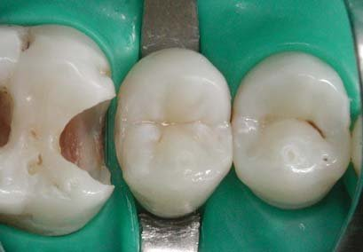
Додаткова фіксація завіси на зубі 16. На реставрований зуб 16 було встановлено додатковий зажим для молярів з метою стабілізації латексної завіси на час виконання адгезивних процедур. Після встановлення зажима завіса затягнута флосом навколо шийки зуба і додатково стабілізована дерев'яним міжзубним клинцем через занадто глибокий дефект зубних тканин по дистальній контактній поверхні. На час протравлювання зубних тканин і внесення адгезиву сусідні зуби були ізольовані звичайною лавсановою смужкою.
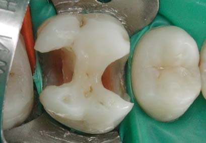
Адгезивна підготовка. Адгезивна підготовка поверхні зубних тканин зуба 16 включала одночасне кислотне протравлювання емалі (не менше 30 с) і дентину (не більше 15 с), змивання кислоти струменем води (10 с), внесення і експозицію адгезиву (30 с), видалення розчинника легким струменем повітря (не менше 5 с) і світлову полімеризацію кожної поверхні (10 с), виконану негайно після видалення розчинника для запобігання відриву адгезивного шару від дентину відцентровим тиском лікворy.
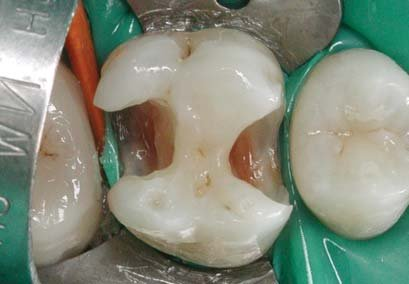
Усунення дефектів до рівня МОД. Для запобігання транссудації дентинного лікворy крізь гідрофільний адгезивний шар (ефект водних дерев) поверхня дентину в проекції пульпи вкрита максимально тонким шаром гідрофобного текучого композиту. Спочатку відновлені зовнішні поверхні горбків, усунені дефекти емалі і запечатана піднебінна фісура, потім створені вертикальні кути переходу оральної і вестибулярної поверхонь у контактні (це добре видно за зміною мезіально-вестибулярного кута).
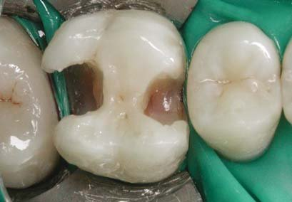
Встановлення матриці і адгезивна підготовка
Встановлення і фіксація матриці. Металева секційна матриця системи Палодент встановлена під латексну завісу на дистальній поверхні зуба 16. Для легкого введення матриці у досить вузький простір її опуклість була попередньо зменшена до необхідної. У пришийковій ділянці матриця зафіксована дерев'яним клинцем, введеним за допомогою щипців з оральної сторони міжзубного проміжку. Тонким зондом проведена перевірка щільності прилягання матриці до поверхні зуба по краях дистального дефекту.
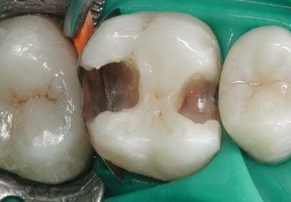
Моделювання контактної поверхні. Після фіксації клинцем у пришийковій ділянці матриця була зафіксована «молярним» кільцем системи Палодент до оральної і вестибулярної поверхонь коронки. Щипцями по кутах матриці утворені складки, завдяки яким край матриці по жувальній поверхні утворив форму зовнішньої частини дистального крайового валика. Гладилкою і штопфером відмодельована форма контактної поверхні з асиметричною локалізацією контактного пункту (ближче до вестибулярної поверхні).
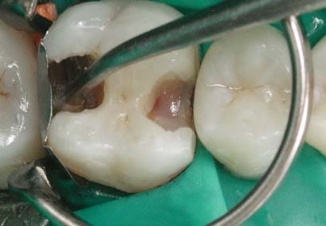
Очищувальне кислотне протравлювання. При встановленні секційної матриці під завісу і введенні клинця в міжзубний проміжок можлива контамінація пришийкової частини порожнини класу II ясенною рідиною. Тому 10-секундне очищувальне протравлювання ділянки прилягання секційної матриці до країв порожнини по дну і стінках має бути стандартною процедурою. Оскільки адгезивний шар уже утворений, короткочасне внесення кислоти в порожнину не становить небезпеки, і немає різниці, яка поверхня зубних тканин очищається.
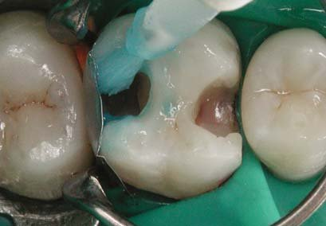
Змивання кислоти і висушування. З поверхонь порожнини кислоту змивають інтенсивним водним спреєм. Одночасно зі змиванням кислоти змивається й інгібований шар, що складається з неактивних мономерів, інгібованих киснем. Інгібований шар утворюється в результаті полімеризації адгезиву, він необхідний для забезпечення крайової адаптації композиту до адгезивної поверхні, і тому його необхідно відновити. Для відновлення інгібованого шару порожнину потрібно повністю висушити повітряним струменем.
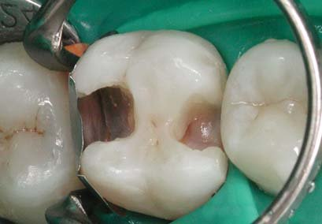
Відновлення інгібованого шару. Після ретельного висушування порожнини інгібований шар на адгезивних поверхнях був утворений шляхом внесення класичного адгезиву (у багатокомпонентних системах — смола з останнього флакона, зазвичай називається адгезивом), рівномірного розподілення повітряним струменем і світлової полімеризації. Тонкий шар адгезиву (товщиною менш ніж 30 мкм) проникний для кисню на всю глибину, повністю інгібується і, на відміну від дентинного адгезиву, видаляється при адаптації композиту.
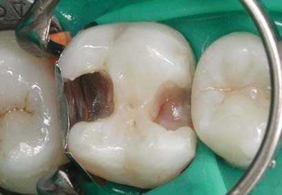
Відновлення дистальної поверхні
Внесення текучого композиту. Контактна поверхня буде відновлена трьома різними композитами, які вносяться послідовно, а полімеризуються одномоментно. Після світлової полімеризації класичного адгезиву спочатку внесена невелика кількість текучого композиту. Текучий композит розподілили вздовж прилягання секційної матриці до країв порожнини. Подібно до силера, текучий композит повинен заповнити простори в місцях неплотного прилягання матриці, недоступні для заповнення звичайним композитом.
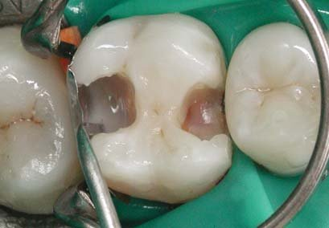
Внесення мікрогібридного композиту. Слідом за неполімеризованим текучим композитом була внесена порція мікрогібридного композиту, видавлена безпосередньо з капсули. Мікрогібридний композит має звичайну, скульптурну щільність, тому в результаті крайової адаптації, пластичної обробки він ефективно витісняє надлишки текучого композиту. Мікрогібридний композит має також добру вклеюваність, що гарантує добре заповнення пришийкової ділянки без утворення щілин і повітряних бульбашок.
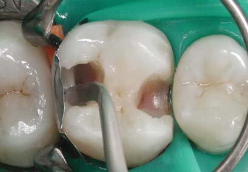
Внесення наногібридного композиту. Потім була внесена порція наногібридного композиту. Нанокомпозит гірше вклеюється, тому внесення виконано гладилкою з витиранням об край секційної матриці. Однак нанокомпозит має більшу міцність і меншу стираність, завдяки чому краще утримуватиме форму контактного пункту і крайового валика. Маса з трьох композитів рівномірно розподілена вздовж секційної матриці і притерта до дистальних горбків, висота крайового валика уточнена тонкою гладилкою.
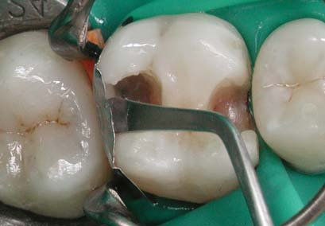
Полімеризація контактної поверхні. Для відновлення контактної поверхні були використані відтінок тіла текучого композиту, а також прозорі відтінки мікрогібридного і наногібридного композитів, що мають оптимальне пропускання світлового потоку полімеризаційної лампи. Ефективність полімеризації посилює також відбиття від блискучої поверхні металевої матриці. Тому полімеризація контактної поверхні виконана спрямуванням променя крізь порожнину реставрованого зуба одномоментно протягом 20 с.
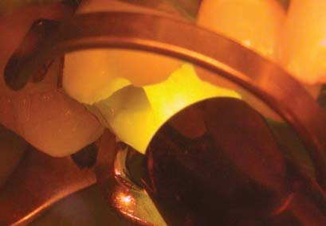
Видалення металевої матриці. Після зняття щипцями раббердама зажимного кільця системи Палодент секційну матрицю потрібно відділити гладилкою від оральної і вестибулярної поверхонь зуба, щоб можна було вивести її з міжзубного проміжку. Однак потужне зажимне кільце при відновленні контактної поверхні забезпечує таке розведення зубів між собою, що видалити секційну матрицю з проміжку зазвичай вдається лише за допомогою щипців. Міжзубний клинець залишається на місці, його потрібно навіть просунути глибше.
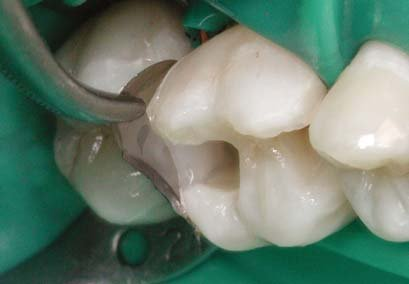
Обробка дистальної контактної поверхні
Вигляд відновленої дистальної стінки. Перша візуальна оцінка після видалення секційної матриці показує наявність точкового контакту між зубами, зміщеного в бік вестибулярної поверхні, а також правильні кути переходу контактної поверхні в оральну і вестибулярну. Тепер дистальний дефект класу II переведений у дефект класу I, а дефект МОД став дефектом МО. Важливо: на внутрішній поверхні контактної стінки відсутні щілиноподібні заглиблення, які буде важко заповнити щільним композитом.
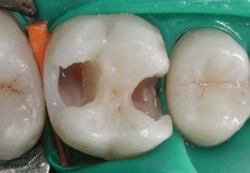
Видалення полімеризованого поверхневого шару. При полімеризації в результаті усадки на поверхні композиту утворюється поверхневий шар, який може бути інгібований киснем або полімеризований за відсутності доступу кисню до поверхні (при полімеризації під матрицею). Поверхневий шар м'який, проникний для харчових барвників і тому повинен бути видалений з контактної поверхні. На опуклих ділянках контактної поверхні цей шар слід видаляти металевою абразивною смужкою зернистістю 15-30 мкм.
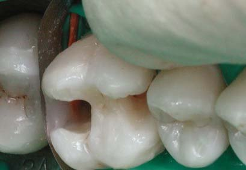
Обробка крайового прилягання. На увігнутих ділянках контактної поверхні (у пришийковій ділянці, у місці переходу реставрації на зовнішню поверхню зуба) полімеризований поверхневий шар слід видаляти абразивною лавсановою смужкою, яка може приймати форму оброблюваної поверхні. Встановивши абразивну смужку максимально глибоко в міжзубному проміжку, потрібно вивести клинець, а контактний пункт захистити звичайною роздільною смужкою від пошкоджень торцевою частиною абразивної смужки.
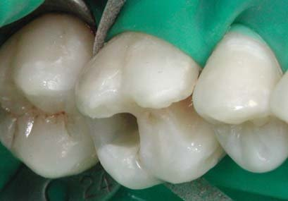
Обробка крайового прилягання. Обробку увігнутих ділянок контактної поверхні крупнозернистою і дрібнозернистою частинами провели за алгоритмом: 10 зворотно-поступальних рухів вздовж контактної поверхні, 10 — по куту переходу на оральну поверхню і 10 — по куту переходу на вестибулярну поверхню. Після обробки крупнозернистою частиною абразивної лавсанової смужки слід змити з оброблюваної поверхні частинки абразиву і лише тоді обробляти дрібнозернистою частиною абразивної смужки.
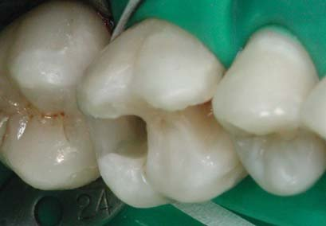
Підготовка секційної матриці. Секційні матриці системи Палодент своєю опуклістю добре підходять лише для дистальних контактних поверхонь. На менш опуклій мезіальній контактній поверхні бокових зубів секційні матриці Палодент через надмірну опуклість при встановленні і фіксації міжзубним клинцем прогинаються у зворотний бік, і прогин, що утворився в ділянці дефекту після встановлення міжзубного клинця, уже неможливо усунути адаптацією матриці до апроксимальної контактної поверхні.
Відновлення мезіальної контактної поверхні
Підготовка секційної матриці. Для відновлення мезіальних контактних поверхонь бокових зубів опуклість секційної матриці Палодент слід зменшити. Ми зменшуємо опуклість секційної матриці шляхом її протягування по площині пристосування, запропонованого нами для контурування лавсанових матриць при відновленні контактних поверхонь передніх зубів. Всього кілька рухів, і секційна алюмінієва матриця настільки змінює свою форму, що її можна легко встановити в просторі між зубами.
Встановлення секційної матриці. Спочатку між апроксимальними поверхнями дистального контактного пункту була введена роздільна лавсанова матриця, щоб не склеїти контакт при адгезивній підготовці. Потім у міжзубному проміжку під латексну завісу встановлена контурована секційна матриця і зафіксована міжзубним клинцем, введеним з оральної сторони (відповідно до профілю міжзубного проміжку). Зондом було перевірено крайове прилягання секційної матриці в пришийковій частині порожнини.
Моделювання контактної поверхні. Зажимне кільце системи Палодент встановлене поверх клинця, потім утворені складки матриці по кутах для формування переходу контактної поверхні в крайовий валик, і крупним штопфером сформований профіль контактної поверхні зі зміщенням контактного пункту вестибулярно. Часто для акцентування вестибулярного зміщення контактного пункту ми встановлюємо вертикально ще один клинець великого розміру, блокуючи цим простір між оральним тиском зажима і матрицею.
Адгезивна підготовка. Після очищувального кислотного протравлювання країв мезіальної порожнини, що прилягають до секційної матриці, і повного висушування був відновлений інгібований шар на всіх поверхнях, що склеюються, шляхом внесення, вирівнювання легким повітряним струменем і світлової полімеризації класичного адгезиву, хімічно сумісного із застосовуваними композитами (класичний адгезив повинен належати до застосовуваної реставраційної системи). Світлова полімеризація проведена протягом 20 с.
Відновлення жувальної поверхні
Шар навколопульпарного дентину. Згідно з біоміметичним принципом, для отримання кінцевого кольору реставрації, ідентичного кольору зуба, слід у глибоких частинах порожнини відновити яскравим опаковим відтінком контури навколопульпарного дентину, втрачені через хронічне каріозне ураження. Це і було зроблено в цьому випадку. Однак співвідношення обсягу природних і штучних зубних тканин у конструкції реставрованого зуба 16 дозволяє знехтувати наявністю цього шару в реставраційній конструкції.
Шар основного дентину. Основний дентин відновлений опаковим відтінком мікрогібридного композиту до топографічної межі емалево-дентинного з'єднання. У великій дистальній порожнині очікувані значні полімеризаційні напруження, тому шар основного дентину був розділений тонкою гладилкою поздовжньо на всю глибину. Після повної полімеризації мікрогібридного композиту щілина між вестибулярною і оральною частинами залита текучим композитом з подальшою повною полімеризацією протягом 20 с.
Шар основної емалі. Якщо шар основного дентину був відновлений мікрогібридним композитом, то шар основної і поверхневої емалі відновлений наногібридним композитом — крок у напрямку повторення біомеханіки зубних тканин. Жовтим відтінком тіла відновлена пірамідальна форма горбків жувальної поверхні і закладені глибина й обриси фісур, що є результатом злиття основ горбків. Важливо, щоб шар допоміжного текучого композиту був повністю перекритий шаром основної емалі.
Шар поверхневої емалі. Не варто до внесення прозорого відтінку наногібридного композиту створювати будь-які борозенки у шарі основної емалі, в яких можуть залишитися повітряні бульбашки. Борозенки другого і третього порядків краще створювати тонким інструментом лише в остаточному шарі композиту, користуючись для цього спеціальним гостроконечним інструментом і оптичним збільшенням порядку х4,5. Ближче до вершин горбків шар прозорого відтінку, що імітує поверхневу емаль, повинен бути товщий.
Характеризація фісур. Для підкреслення основних фісур на жувальній поверхні можна застосувати забарвлення пігментованим текучим композитом. Звісно, тут дуже важливо зберегти почуття міри, хоча, насправді, оцінити гідно цей прийом зможе лише інший стоматолог. Для кращого вклеювання барвника потрібно прозорий відтінок на горбках затвердити спочатку по 2-3 с, а потім провести повну полімеризацію із захистом гліцерином від інгібування поверхневого шару.
Обробка мезіальної поверхні
Обробка ділянки контактного пункту. Після повної полімеризації жувальної поверхні, коли випадкова контамінація поверхні вже не може порушити цілісність конструкції реставрованого зуба, можна провести фінішну обробку мезіальної контактної поверхні. Спочатку тонким фінішним бором були згладжені кути контактної поверхні. Виступні частини контактного пункту оброблені металевою дрібнозернистою абразивною смужкою. Міжзубний клинець зберігає робочий простір для обробки контактної поверхні.
Обробка крайового прилягання. Міжзубний клинець видалений після введення між контактними поверхнями лавсанової абразивної смужки і блокування контактного пункту роздільною смужкою. Крупнозернистою частиною абразивної смужки виконано приблизно по 10 рухів по центру контактної поверхні, по переходу контактної поверхні в оральну поверхню і по переходу у вестибулярну. Після змивання водою крупного абразиву така сама обробка виконана дрібнозернистою частиною абразивної смужки.
Перевірка контактної поверхні флосом. Зубним флосом можна перевірити гладкість контактних поверхонь у ділянці контактного пункту і в пришийковій ділянці. Для цього потрібно провести флос крізь контактний пункт, кількома рухами «вгору-вниз» перевірити якість реставрації по центру контактної поверхні, по переходу контактної поверхні в оральну і по переходу у вестибулярну поверхню, потім вивести крізь контактний пункт назад. Флос не повинен затримуватися і розшаровуватися на поверхні зуба.
Перевірка щільності контактного пункту. Щільність контактного пункту можна перевірити ізолювальною лавсановою смужкою, яка має стабільну товщину (зазвичай 50 мкм). Для такої перевірки потрібно ввести лавсанову смужку в міжзубний проміжок і потім повільно виводити її з проміжку. Якщо на контактних поверхнях немає сходинок, смужка повинна вводитися легко. Якщо для повільного виведення смужки з контактного пункту потрібне натреноване зусилля, значить, щільність контактного пункту відповідає нормі.
Обробка кутів у піддесенній ділянці. Після зняття раббердама потрібно перевірити й обробити в піддесенній ділянці переходи контактної поверхні на оральну і вестибулярну поверхні фінішним бором спеціального дизайну (тонкий фінішний бор, циліндрична форма якого за 1 мм до активного кінчика плавно переходить у конусоподібну форму). Якщо бор позначений жовтою смужкою (зернистість абразивної робочої частини становить 30 мкм), то обробка увігнутої поверхні шийки не спричиняє видимих пошкоджень ясенного краю.
Вигляд зубів після полірування
Вигляд жувальної поверхні. Безпосередньо після полірування жувальної поверхні повинна спостерігатися відмінність поверхні емалі і реставрації за кольором, що пов'язано з пересиханням емалі в процесі реставрації. На кожній жувальній поверхні «читаються» крайові валики, на кожному горбку — жувальний валик, що розділяє дві площини горбка, спускаючись від вершини до поздовжньої фісури. При перевірці оклюзії в позиції звичного змикання слід усувати оклюзійні контакти на напрямних горбках.
Вигляд вестибулярної поверхні. Вестибулярна поверхня премоляра і молярів виглядає рівномірно світлою, з вестибулярного боку не спостерігаються такі відмінності кольору реставрацій і зубних тканин, як по жувальній поверхні. Це пов'язано з незначною товщиною шару композиту і площею реставрації по вестибулярній поверхні та збереженням практично всієї природної емалі. Це стало можливим лише завдяки техніці вільного дизайну препарування зубних тканин для адгезивного реставрування.
Вигляд оральної поверхні. Як і по вестибулярній поверхні, з оральної сторони спостерігається рівномірний зовнішній вигляд реставрованих зубів. Трохи темнішою виглядає ділянка піднебінної фісури на зубі 16, що пов'язано, як і на жувальній поверхні, з товщиною шару композиту. З оральної сторони через колишній навислий край видаленої реставрації на дистальній поверхні зуба 16 визначається інша форма міжзубних сосочків. Для відновлення пошкодженого сосочка знадобиться кілька місяців.
Колір в ультрафіолетовому діапазоні. Звичайно, ніхто й ніколи, крім іншого стоматолога, не буде бачити ці моляри в ультрафіолетовому освітленні, і в такому тестуванні зовнішнього вигляду реставрованих зубів немає цілей естетичної інтеграції реставрацій. Тим не менш, при флуоресценції чіткіше, ніж у діапазоні звичайного освітлення, виділяються лінії відриву композиту від емалі, тому перевірка флуоресценції допомагає виявити крайову дезінтеграцію реставрацій і зубних тканин, яка не була видна при звичайному огляді.
Рентгенконтроль крайового прилягання. На рентгенівському знімку потрібно перевірити крайове прилягання реставрацій у пришийковій ділянці контактних поверхонь коронок, виконаних з рентгеноконтрастного композиту. Рентгенологічний контроль коронок реставрованих зубів після побудови контактів і контактних поверхонь є внутрішнім стандартом клініки, і оскільки така діагностика не входить до загальноприйнятого стандарту лікування, необхідно поінформувати пацієнта і отримати його згоду на цей знімок.
Стан через 7 днів
Після водопоглинання реставрація і зубні тканини за зовнішнім виглядом не відрізняються між собою. Щоправда, де поверхня композиту, видно за дрібними повітряними бульбашками і за відсутністю «емалевого» блиску на мезіальних крайових валиках у місцях відбиття світла від спалаху стоматологічної фотокамери. Рельєф жувальної поверхні був згладжений під час інтеграції реставрованих зубів в оклюзії, але й після пришліфовування він все ще залишається «читабельним». Також зрозуміло, що відновити анатомічну форму лише двох молярів, не відновлюючи всі інші верхні зуби, у принципі неможливо. Ясенний край виглядає звичайним, оральна частина міжзубного сосочка між молярами відсутня.
Стан через 2 роки
Минуло 2 роки, і доброволець, чиї зуби були обрані моделлю для цього клінічного випадку, вже закінчує навчання на лікаря-стоматолога. Перед фотозйомкою зуби були очищені від зубного нальоту професійною зубною пастою, а видалений цією процедурою блиск поверхні реставрацій був відновлений щіткою ОккуБраш. За знімками можна побачити крайове забарвлення композиту лише по пришийковому краю в ділянці піднебінної фісури, яке пов'язане з недостатньою обробкою крайового прилягання при фінішній обробці (таке саме забарвлення видно і через тиждень після реставрації на знімку оральної поверхні). Зверніть увагу, як відновилася форма оральної частини міжзубного сосочка між молярами.
Оклюзійні контакти. Швидким і частим змиканням зубів з артикуляційною фольгою товщиною 20 мкм виявлено безліч контактних точок переважно на напрямних горбках і молярів, і премоляра з інтактною жувальною поверхнею. Це може бути пов'язано з мимовільним зміщенням нижньої щелепи при односторонній перевірці контактів. На поверхні композиту відсутні стерті майданчики на опорних горбках, що свідчить як про абразивну стійкість композиту, так і про коректну форму горбків.
Контрольна рентгенограма. Наша увага звернена головним чином на стан зубних тканин і реставрації зуба 15, оскільки в цьому зубі, під лікарську відповідальність реставруючого стоматолога, але відповідно до правил адгезивної реставрації, залишена без підтримки дентину емаль жувальної поверхні. Рішення було правильним, оскільки жодного вторинного процесу не виявлено ні клінічно, ні рентгенологічно. Крайове прилягання всіх реставрацій у пришийковій ділянці без порушень, видимих на знімку.
Висновок
Потрібно підкреслити, що системи секційних матриць при відновленні контактних поверхонь бокових зубів і контактного пункту між ними дозволяють відтворювати такі анатомічні особливості, як позицію контактного пункту, різну форму мезіальних і дистальних поверхонь, форму простору між апроксимальними поверхнями.
Використання секційних матриць різної опуклості, зажимних кілець для премолярів і молярів, утворення складок по кутах на встановленій матриці дозволяють поліпшити форму контактної поверхні, зменшуючи обсяг і тривалість фінішного моделювання.
При відновленні контактної поверхні оновлення інгібованого шару, змитого при кислотному протравлюванні, краще проводити класичним адгезивом, який не утворює адгезивного шару.
Враховуючи мануальні особливості наногібридних композитів, ми рекомендуємо відновлювати контактну поверхню трьома композитами (текучим, мікрогібридним і наногібридним) з одномоментною полімеризацією всієї поверхні.
У процесі фінішної обробки для видалення полімеризованого поверхневого шару на контактних поверхнях слід застосовувати дрібнозернисті абразивні смужки двох видів — металеву для опуклої частини контактної поверхні і лавсанову для увігнутої пришийкової ділянки.
Контроль над якістю контактних пунктів і контактних поверхонь повинен включати перевірку гладкості поверхонь флосом, лавсановою смужкою — щільності контактного пункту і рентгенологічно — крайового прилягання в пришийковій ділянці.
Здавалося б, вміючи відновлювати прогнозовані контактні пункти між боковими зубами, можна не турбуватися про довговічність і надійність реставрованих зубів, але… жодна, навіть надсучасна реставрація з найбіосумісного матеріалу не замінить контактні пункти між боковими зубами, утворені природними зубними тканинами, цілісність яких підтримується регулярним очищенням флосом.
Література
- Радлинский С.В. Реставрационные конструкции переднего и боковых зубов // ДентАрт. — 1996. — №4. — С. 22-29.
- Радлинский С.В. Финишная отделка реставраций // ДентАрт. — 1998. — №4. — С. 72-86.
- Радлинский С.В. Реставрация боковых зубов: стратегия и принципы // ДентАрт. — 1999. — №4. — С. 30-40.
- Радлинский С.В. Реставрация боковых зубов: конструкции и классы // ДентАрт. — 2000. — №1. — С. 31-40.
- Радлинский С.В. Конструкция реставрированного зуба и адгезивный слой // ДентАрт. — 2007. — №1. — С. 40-48.
- Шмідзедер Й. Естетична стоматологія. — Львів: Галдент. — 2005. — С. 163-164.
- Roberson T.M., Heymann H.O., Swift E.J. Sturdevant's Art & Science of Operative Dentistry. — St.Louis: Mosby. — 2003. — P. 140-148.
- Rufenacht C.R. Fundamentals of Esthetics. — Chicago: Quintessence Publ. Co. — 1990. — P. 116-119.
- Summitt J.B., Robbins J.W., Schwartz R.S. Fundamentals of Operative Dentistry. — Chicago: Quintessence Publ. Co. — 2001. — P. 285, 288-289.
- Tyldesley W.R. The mechanical properties of human enamel and dentine // Br. Dent. J. — 1959. — 106. — P. 269-278.